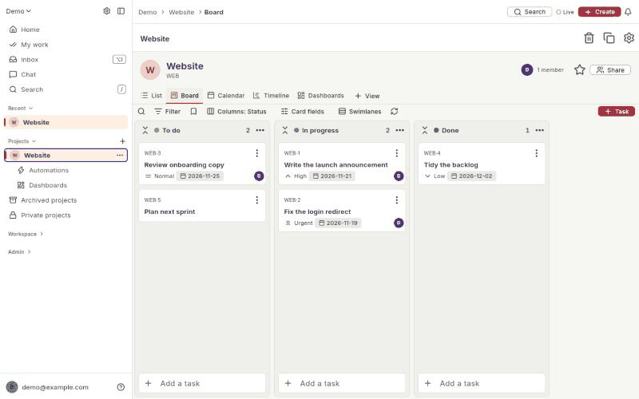
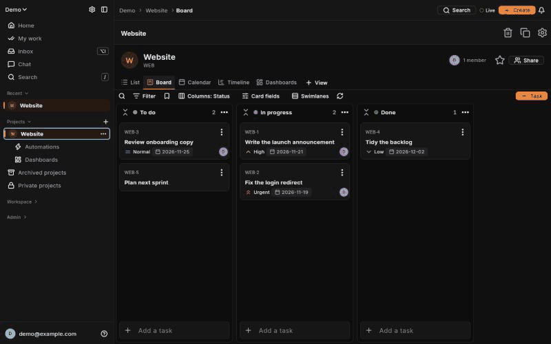
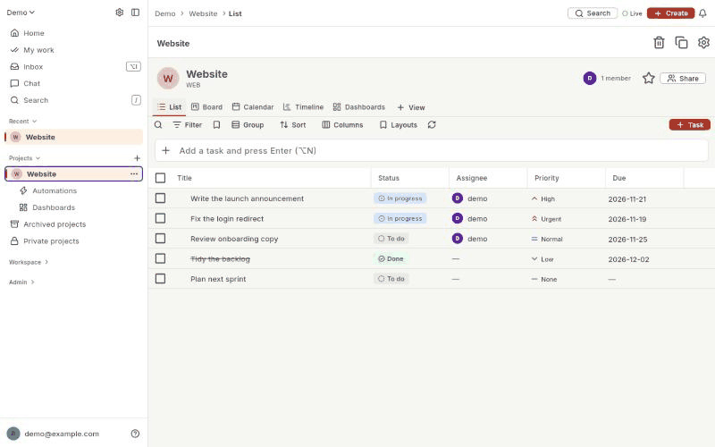
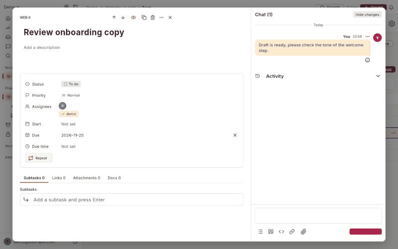
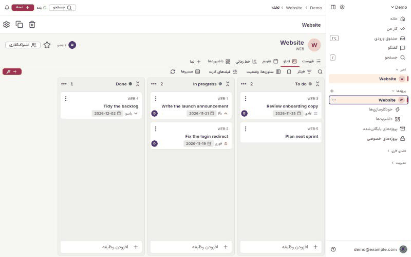
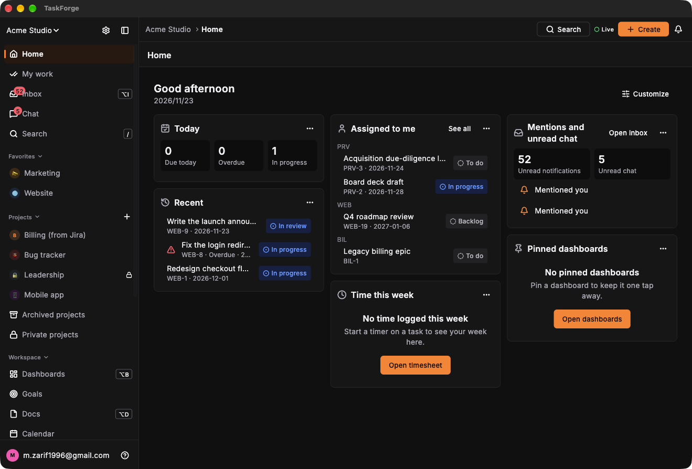
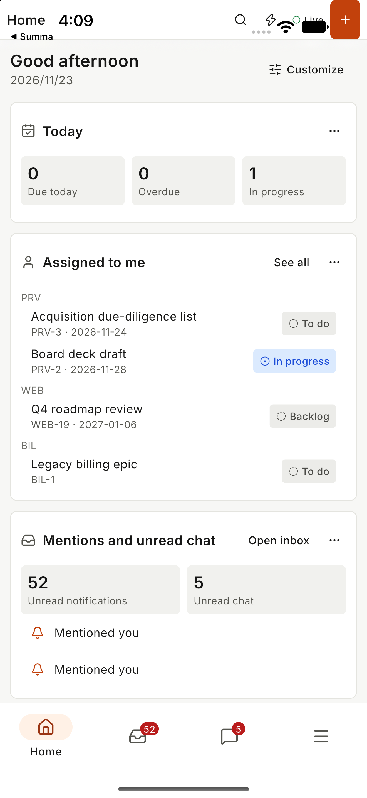
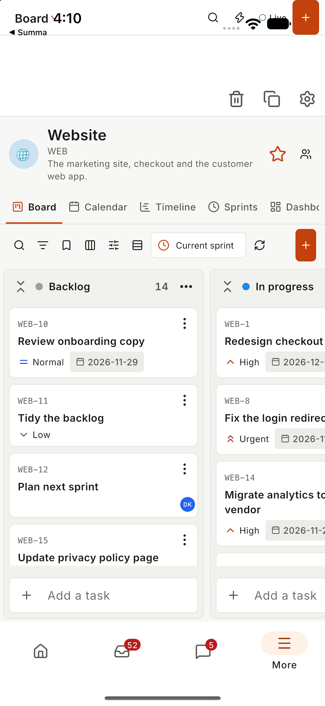

The structure of Jira and the flexibility of ClickUp, without the paywalls, the clutter or the lag. Self-host it, own your data, use it everywhere.


Every core feature is available to everyone. No seat limits, no run counts, no locked tiers.
| Problem elsewhere | TaskForge |
|---|---|
| Paywalls on automations, time tracking, dashboards, audit | All free, self-hosted, no seat limits |
| Slow UI on big projects | Paginated streaming, local cache, optimistic updates |
| Weak or missing offline mode | Local-first cache with queued changes that sync when you reconnect |
| Too many clicks, maze-like admin | Command palette and keyboard shortcuts everywhere |
| Notification overload | Per-event channels, quiet hours and digests |
| Poor right-to-left support | Persian, Arabic and Pashto from the start |
| Lock-in and painful export | Import from Jira, ClickUp and CSV; full export |
One feature per release, each one tested and documented.
List, board, calendar, timeline and dashboards over the same tasks, with saved filters.
Backlog, burndown and carry-over; a visual workflow editor with safe defaults.
Unlimited-depth subtasks and typed dependencies with cycle checks.
Docs with history, channels and direct messages, goals with key results.
Unlimited rule runs, a run history and dry-run mode.
Built-in timer, manual entries, estimates, workload and capacity.
Immutable audit log, a role matrix and a "why can't I see this" explainer.
Live updates and presence over WebSocket, so boards are never stale.
A single Flutter codebase for web, iOS, Android, macOS, Windows and Linux.






Needs Python, Flutter and make. No Docker required for a first look.
git clone <your-fork-or-this-repo> taskforge && cd taskforge make setup # backend venv, deps, Flutter packages make seed # demo workspace "Acme Studio" make run-lite # REST + gRPC, no Docker make macos # or: make web
Sign in with a demo account from docs/demo-guide.md.